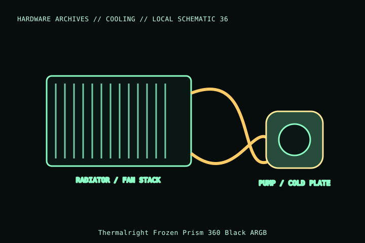

[ INDIVIDUAL COMPONENT // COOLING ]
Thermalright Frozen Prism 360 Black ARGB
A 360 mm Frozen Prism AIO variant with a black radiator and ARGB fan/pump lighting. Connector layout, socket bracket and radiator clearance must be checked against the exact color/model revision.

MODEL IDENTIFICATION: Verify full model, suffix, SKU, generation, connector, and host-support documentation against the physical item. The record describes only the identified model and does not guarantee host compatibility.
Specifications
| Exact identity | Frozen Prism 360 Black ARGB |
|---|---|
| Radiator | 397 × 120 × 27 mm radiator; allow for fans, fittings, tubes and screw heads. |
| Included fans | Three 120 × 120 × 25 mm TL-B12W PWM ARGB fans, per manufacturer product listing. |
| Fan/pump connectors | Separate fan PWM and 5 V ARGB connections; pump power/control connector and lighting wiring are model-specific—use the included manual. |
| Socket support | Manufacturer lists Intel LGA115x/1200/1700/1851/2011/2066 and AMD AM4/AM5; confirm actual bracket package. |
| Host fit | Requires 360 mm radiator placement; verify the complete fan/radiator stack and tube route against case/GPU/board clearances. |
Compatibility and installation
- Do not mix 3-pin 5 V ARGB with 4-pin 12 V RGB. Check wiring diagram for separate pump, fan and lighting leads.
- Confirm case fit for 397 mm radiator plus three fans, fittings and tube bend; “360 mm support” alone is insufficient.
- Use the included socket bracket and verify the exact revision’s compatibility list; connect pump and fans to suitably rated headers/controllers.
Service notes
This is a sealed AIO. Do not open, refill, or sharply bend tubing. Check for leakage and pump noise, and replace the assembly if damaged. Clean radiator fins with the system off and fans held still.
Manufacturer references
- Thermalright — Frozen Prism 360 Black ARGBManufacturer model page for radiator, socket support, and fan/control details.
- Thermalright — SupportManufacturer manuals and installation support.
Model variants and revisions may change specifications or included hardware; the manufacturer’s exact product page/manual and the host manual take precedence.